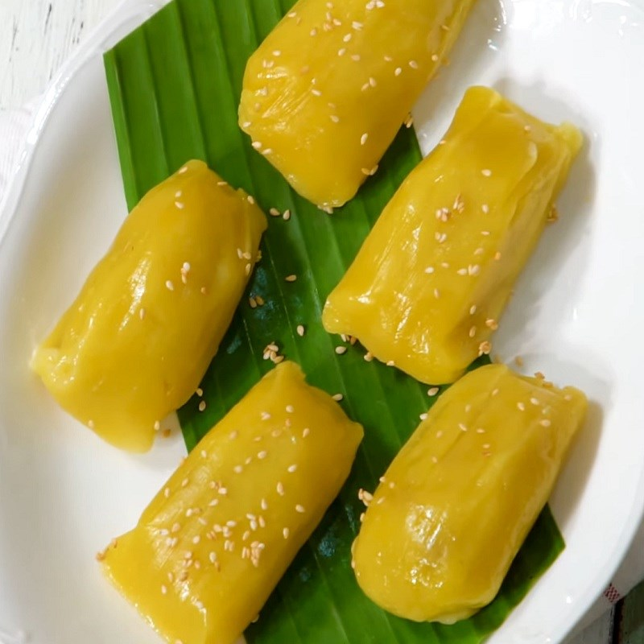

Bánh Ít Mít
Nguyên liệu:
- - 1kg bột nếp thứ tốt
- - 1kg múi mít thật chín
- - 1,5 kg đường
- - 400 đậu xanh cà
- - 1 chén nước lã
- - 1 gói vani
- - Củ hành tím, mỡ hay dầu ăn, lá chuối
- - 2 muỗng cà phê muối bọt trắng
Cách làm:
- - Bột nếp bóp nhuyễn trong thau
- - Mít bỏ hột, đem hấp cách thủy, để nguội, cho vào cối xay hoặc quết nhuyễn, cho bột mít - vào thau bột nếp nhồi đều.
- - Đổ nước vào đường thắng tan, lấy độ 600g nước đường để hơi nguội. Đổ nước đường từ từ vào thau bột nhồi đều, liệu bột vừa
- - Đậu xanh ngâm nước, đãi vỏ, để ráo. Trộn với muối bọt, để độ 5 phút, đem hấp chín, đánh tơi nhuyễn, mịn
- - Hành lột vỏ, xắt lát mỏng, phi mỡ cho thơm, trộn vào bột đậu xanh, vo từng viên tròng bằng trái chanh nhỏ
- - Lá chuối rửa sạch, nhúng vào nước sôi, phôi cho ráo nước, cắt thành hình bán nguyệt.
- - Tay thoa dầu, bắt cục bột hình tròn, cho nhân vào giữa, gói lá theo hình tháp. Nên thêm một lớp lá bên ngoài, bẻ góc cho đẹp.
Cách hấp:
- Đặt xửng lên bếp trước cho sôi nước, xong xếp bánh vào hấp độ 30 phút. Mở nắp xửng rưới 1 tô nước sôi lên bánh và đậy nắp lại. Hấp tiếp 15 phút là bánh chín.